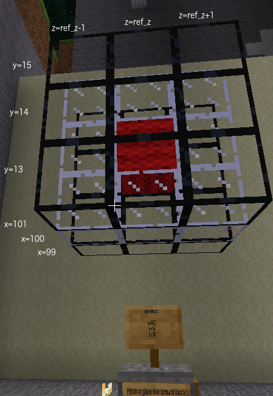

for loopsNested loops are a loop within a loop.
Place a 3x3 square of obsidian glass at x = 101.
Centre of square at y = 14 and z = player z. Remember you can used formulae (eg ref_z - 1, ref_z, ref_z + 1) or
numbers (eg 19, 20, 21) in the sequence in the for statement.
This will also add to Minetest Task 3. However, because we have used obsidian glass rather then normal glass, Minetest won't accept your task attempt as complete yet.
If you want your program to loop with two values changing you can nest the for
loops. We already have a loop for y. Within the loop we can have a loop for z. Any code
in the z loop needs to be indented twice. Code in the y loop is only indented once.
for y in (13, 14, 15):for z in (19, 20, 21):print("y", y, "z", z)
In your task.py python program on the left, there is a print statement in the z loop. When you run the code using ctrl-shift-F10 you can see the values of y and z each time through the loop.
In the sequence of numbers you can use numbers, variables or even formulae using the variables. Here is an example using formulae.
for z in (ref_z - 1, ref_z, ref_z + 1):